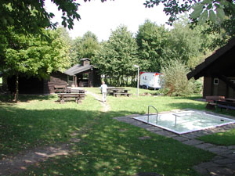
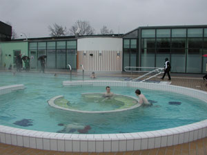

Umfeld
Dudenrode ist ein gepflegter und kinderfreundlicher Ort. Die Freizeitanlage in der Nähe des Haus des Gastes mit Grillplatz, Wassertret- und Armbecken,

Freiluftbrettspielen, Sport- und Kinderspielplatz
bietet jedem Urlaubsgast – ob groß, ob klein – vielfältige
erholsame Betätigungsmöglichkeiten. Neben diesen
Freizeitmöglichkeiten in nächster Nähe können Sie Ausflüge
innerhalb des Werra-Meißner-Kreises unternehmen, z. B. zum
Tierpark Germerode, zum Märchenzoo Ziegenhagen, zum
Grenzmuseum Schifflersgrund oder in die wunderschönen
Fachwerkstädte Eschwege und Witzenhausen. Tagesausflüge
können Sie in die etwas weiter entfernten Städte Kassel,
Hann. Münden, Göttingen, Heiligenstadt, Weimar, Erfurt und
Eisenach, zur Wartburg bei Eisenach und in den Thüringer
Wald unternehmen.

Die nur 7 Km entfernte Kernstadt Bad Sooden-Allendorf
ist ein weithin als „Perle des Werratals“ bekanntes
Heilbad. Modernste Kurmittel- und Wellnesseinrichtungen wie
die 1995 in Betrieb genommene WerratalTherme mit
Solehallenbewegungsbad, Wellenbad und ausgedehntem
Saunabereich (innen und außen), das Gradierwerk und
verschiedene andere Erholungseinrichtungen stehen Ihnen zur
Verfügung. Sie lindern akute und chronische Erkrankungen
der Atmungsorgane, Asthma und Bronchitis sowie Rheuma,
Herz- und Kreislaufstörungen und Erschöpfungszustände.
Neben den Kur- und Wellnesseinrichtungen gibt es in Bad Sooden-Allendorf natürlich auch eine Fülle von Freizeiteinrichtungen, wie ein Freibad, Tennisplätze, Minigolfanlagen, ein Kino und vieles mehr.
Bad Sooden-Allendorf ist nicht nur als Heilbad, sondern auch in der Stadtgestaltung eine Perle der Region. Die herrliche, guterhaltene Fachwerksubstanz sucht ihresgleichen in Hessen. Das kunstvoll geschnitzte und bemahlte Fachwerk schafft ein farbenfrohes Stadtbild.